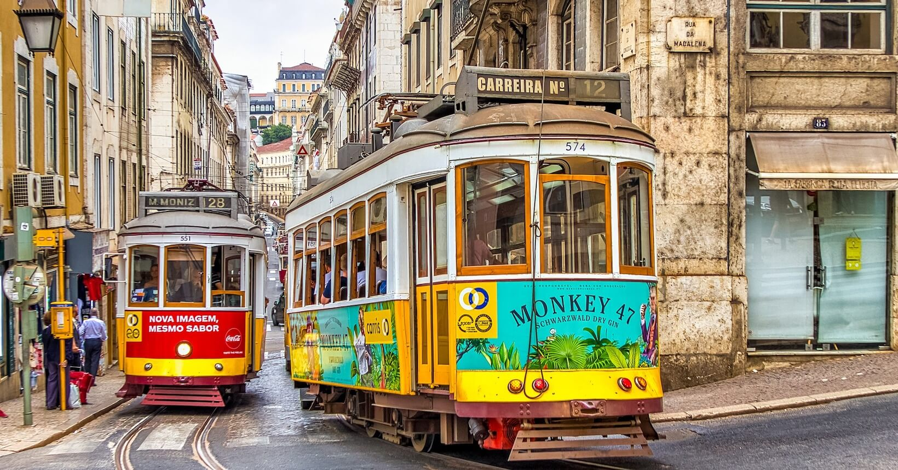
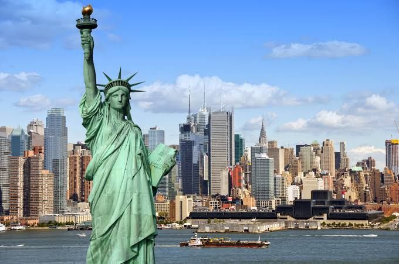
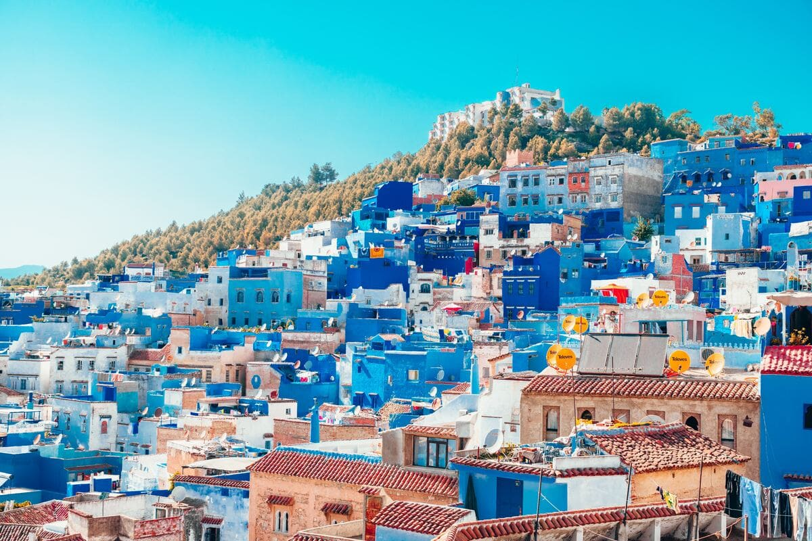
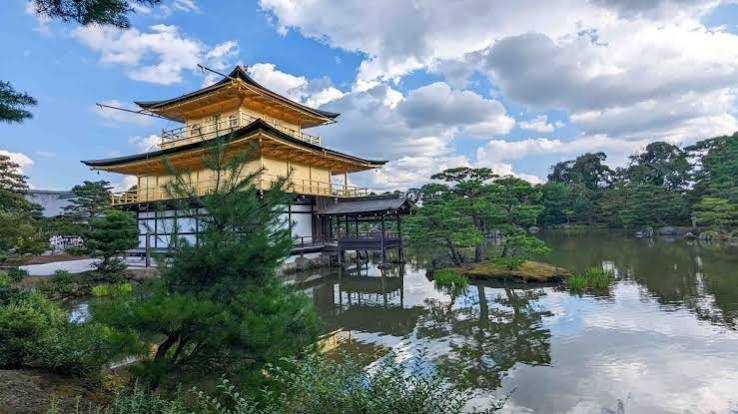

Principais roteiros
Escolha um destino e veja o dia a dia da viagem.

Lisboa
7 noites · saída em Abril · a partir de R$ 6.490
- Dia 1 · Chegada e Alfama
Check-in, caminhada pelo bairro e jantar com fado. - Dias 2 e 3 · Lisboa sem pressa
Belém, bondes e miradouros, com tardes livres. - Dia 4 · Sintra
Palácios e floresta num bate-volta. - Dias 5 a 7 · Porto e Douro
Trem para o Porto, passeio de barco no Douro e despedida.
Paris
7 noites · saída em Maio · a partir de R$ 9.900
- Dia 1 · Chegada e Marais
Hotel perto do Sena e volta pelo bairro. - Dia 2 · Louvre e Tulherias
Um museu por vez, com almoço no jardim. - Dia 3 · Montmartre
Ladeiras, ateliês e vista da cidade. - Dia 4 · Versalhes
Bate-volta pelo palácio e jardins. - Dias 5 a 7 · Sena e Quartier Latin
Cruzeiro ao entardecer, livrarias e dia livre.

Nova York
7 noites · saída em Novembro · a partir de R$ 11.400
- Dia 1 · Chegada e Greenwich Village
Ruas arborizadas e jantar no bairro. - Dia 2 · Central Park e museus
Passeio pelo parque e tarde em museu. - Dia 3 · Brooklyn
Travessia a pé pela ponte. - Dias 4 a 7 · High Line, mirante e dias livres
Caminhada elevada, vista panorâmica e compras.

Marrocos
8 noites · saída em Julho · a partir de R$ 7.350
- Dias 1 e 2 · Marrakech
Medina, jardins e riad com pátio. - Dias 3 e 4 · Atlas e Aït Benhaddou
Estrada panorâmica e cidade de barro. - Dias 5 e 6 · Deserto de Merzouga
Dromedário e noite sob as estrelas. - Dias 7 e 8 · Fez
Medinas e volta para casa.

Kyoto
10 noites · saída em Outubro · a partir de R$ 15.200
- Dias 1 e 2 · Chegada e Gion
Bairro das casas de chá e jantar local. - Dia 3 · Fushimi Inari
Os portões vermelhos de manhã cedo. - Dias 4 e 5 · Arashiyama e chá
Bosque de bambu e cerimônia do chá. - Dias 6 a 10 · Nara, ryokan e despedida
Cervos, jardins zen e duas noites em ryokan.
Patagônia
9 noites · saída em Janeiro · a partir de R$ 9.800
- Dia 1 · El Calafate
Chegada e jantar à beira do lago. - Dia 2 · Perito Moreno
Passarelas diante da geleira. - Dias 3 e 4 · Estrada até El Chaltén
Estepe e primeira vista do Fitz Roy. - Dias 5 a 9 · Trilhas e retorno
Laguna Torre, barco no Lago Viedma e volta.